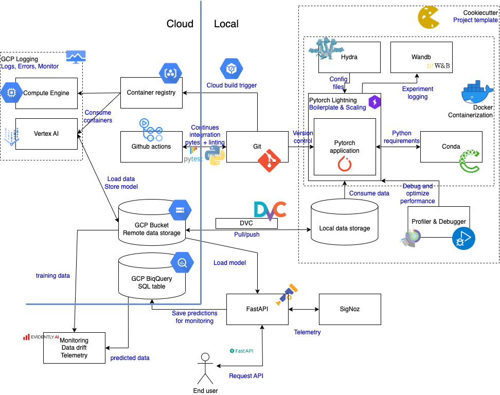

{kind=link}

This is the report template for the exam. Please only remove the text formatted as with three dashes in front and behind like:
--- question 1 fill here ---
where you instead should add your answers. Any other changes may have unwanted consequences when your report is auto
generated in the end of the course. For questions where you are asked to include images, start by adding the image to
the figures subfolder (please only use .png, .jpg or .jpeg) and then add the following code in your answer:
markdown

In addition to this markdown file, we also provide the report.py script that provides two utility functions:
Running:
bash
python report.py html
will generate an .html page of your report. After deadline for answering this template, we will autoscrape
everything in this reports folder and then use this utility to generate an .html page that will be your serve
as your final handin.
Running
bash
python report.py check
will check your answers in this template against the constrains listed for each question e.g. is your answer too short, too long, have you included an image when asked to.
For both functions to work it is important that you do not rename anything. The script have two dependencies that can
be installed with pip install click markdown.
The checklist is exhaustic which means that it includes everything that you could possible do on the project in relation the curricilum in this course. Therefore, we do not expect at all that you have checked of all boxes at the end of the project.
make_dataset.py file such that it downloads whatever data you need andrequirements.txt file with whatever dependencies that you are usingpep8) while doing the projectEnter the group number you signed up on
Answer:
12
Enter the study number for each member in the group
Example:
sXXXXXX, sXXXXXX, sXXXXXX
Answer:
s213160, s183568, s184198, phigon
What framework did you choose to work with and did it help you complete the project?
Answer length: 100-200 words.
Example: We used the third-party framework ... in our project. We used functionality ... and functionality ... from the package to do ... and ... in our project.
Answer:
As our main framework, we choose to work with Pytorch-Geometric which is a library for deep learning on graph-structured data. It provides a set of efficient implementations for graph convolutional networks, graph pooling and graph attention layers, as well as various other utility functions for handling graph data. By using Pytorch-Geometric, we had access to a range of pre-implemented graph neural network (GNN) models which we later use for our project. Except from the GNN we also used Pytorch-Geometric to access our dataset CORA to classify scientific papers based on their content. Additionally, Pytorch-Geometric is built on PyTorch, which is a popular deep-learning library with a large community, so we also had access to a wealth of resources and tutorials for troubleshooting and further development. All in all, it was a very helpful framework for our project helping us focus more on the pipeline and model deployment.
In the following section we are interested in learning more about you local development environment.
Explain how you managed dependencies in your project? Explain the process a new team member would have to go through to get an exact copy of your environment.
Answer length: 100-200 words
Example: We used ... for managing our dependencies. The list of dependencies was auto-generated using ... . To get a complete copy of our development enviroment, one would have to run the following commands
Answer:
We mainly used pip to manage most of the dependencies in our project. In our files, we provided a requirement file for both tests and for the rest of our files. These files contain all the necessary packages to run our project. When a new member wants to set up an environment the only thing he has to do is to create a new conda environment and then run our setup.py file. This file will install all requirements. Lastly, we also provide a Makefile with commands for building a new environment and setting up the requirements. Examples of these commands are: make requirements or make requirements_test for installing the requirements files, make data for running the initial data set up (It only needs to ran once) and make create_environment for automatically creating a new conda environment for the user.
We expect that you initialized your project using the cookiecutter template. Explain the overall structure of your code. Did you fill out every folder or only a subset?
Answer length: 100-200 words
Example: From the cookiecutter template we have filled out the ... , ... and ... folder. We have removed the ... folder because we did not use any ... in our project. We have added an ... folder that contains ... for running our experiments. Answer:
We have used the cookiecutter template as the foundation of our the structure of this project. The main folder is the src folder, which contains several subfolders. The src/models folder contains the python code for our model. This is both the model class but also the training, prediction and evaluation scripts for our model. The src/data folder creates our dataset and saves it to the data/ folder. The src/features folder is not used and could have been deleted. We have extended the src/ folder to also contain src/server and src/utilities. We have created a test/ folder at the root, which contains all the unittests for primarily the statements in the src/ folder. The data/, models/ and reports/ folder have been used as intended by the template with one twist: as our dataset, the Cora citation graph, is a benchmark dataset we only save the processed data in data/processed as the Pytorch-Geometric library takes care of the cleaning and processing of the data.
Did you implement any rules for code quality and format? Additionally, explain with your own words why these concepts matters in larger projects.
Answer length: 50-100 words.
Answer:
To ensure that all commits satisfies pep8 we both use pre_commit and github actions. The pre_commit firstly executes black and then tests it with flake8. Furthermore, isort is also executed using pre_commit to ensure dependencies are imported in alphatical order. Finally, this is also tested with github actions when a commit is pushed to a pull request targeted at the main branch. Code quality and format concepts matter in larger projects because they help to ensure that the code is maintainable, readable, and efficient, which is essential for large projects that are likely to have multiple developers working on them.
In the following section we are interested in how version control was used in your project during development to corporate and increase the quality of your code.
How many tests did you implement and what are they testing in your code?
Answer length: 50-100 words.
Example: In total we have implemented X tests. Primarily we are testing ... and ... as these the most critical parts of our application but also ... .
Answer:
We have implemented 11 different tests. The tests include: * Dataset length and samples shape in the dataset * Model initialization, forward pass, model output shape, and model evaluation and prediction methods * Model training routine running for 1 epoch * Local server info and prediction endpoints * Data drift monitoring
What is the total code coverage (in percentage) of your code? If you code had an code coverage of 100% (or close to), would you still trust it to be error free? Explain you reasoning.
Answer length: 100-200 words.
Example: The total code coverage of code is X%, which includes all our source code. We are far from 100% coverage of our code and even if we were then...*
Answer:
The total code coverage of our code is around 52%. A code coverage of 100% means that all lines - i.e. statements of the code in the repo have been executed by the test suite. However, this does not guarantee that the code is error-free. It only means that all lines of code have been executed at least once. There may still be bugs or edge cases that are not covered by the test suite. Additionally, high code coverage does not necessarily indicate that the tests are well-designed or that they effectively exercise the code. Therefore, it is important to not only have high code coverage but also to have a thorough and well-designed test suite that effectively exercises the code.
Did you workflow include using branches and pull requests? If yes, explain how. If not, explain how branches and pull request can help improve version control.
Answer length: 100-200 words.
Example: We made use of both branches and PRs in our project. In our group, each member had an branch that they worked on in addition to the main branch. To merge code we ...
Answer:
Our workflow did include both branches and pull requests. We “locked” our main branch so no one would be able to push straight to it. Each one of us created a subbranch from the main and work his code there. Whenever something was ready to push to the main a pull request was created and another person on the team had to review it before the merge was complete. Branches and pull requests can help improve version control by allowing multiple people to work on different parts of a project simultaneously without interfering with each other's work. A branch is a separate copy of the codebase that can be worked on independently of the main codebase. A pull request is a request for the changes made in a branch to be reviewed and merged into the main codebase. This allows for more efficient collaboration and code review, and also makes it easier to revert changes if necessary. Additionally, branches can be used to test new features or bug fixes before they are released to the main codebase, helping to ensure that the code is stable before it is deployed.
Did you use DVC for managing data in your project? If yes, then how did it improve your project to have version control of your data. If no, explain a case where it would be beneficial to have version control of your data.
Answer length: 100-200 words.
Example: We did make use of DVC in the following way: ... . In the end it helped us in ... for controlling ... part of our pipeline
Answer:
We did use DVC for managing data. The DVC remote is hosted in a GCS bucket. The version controlled data consisted of the serialized dataset used for training, validation and testing, as well as the trained model latest checkpoint. This was useful for e.g. easily start working on a fresh clone of the project (since the data and the model checkpoints are not version controlled on the git repo), being able to perform tests that need the data on GitHub Actions, or bundling the data into container images built via triggers on the cloud. However, we decided to keep a second bucket for storing the same data but unfragmented. That was then updated manually. We found that this solution was allowing much faster building of container images on the cloud.
Discuss you continues integration setup. What kind of CI are you running (unittesting, linting, etc.)? Do you test multiple operating systems, python version etc. Do you make use of caching? Feel free to insert a link to one of your github actions workflow.
Answer length: 200-300 words.
Example: We have organized our CI into 3 separate files: one for doing ..., one for running ... testing and one for running ... . In particular for our ..., we used ... .An example of a triggered workflow can be seen here:
Answer:
We have organized our CI into 2 separate files. One for unittests and one for linting checks. Both file run the tests for three different operation systems; Ubuntu, MacOS and Windows. This is to ensure that our code works for all operation systems. We only test for Python 3.8 though. The files also benefit significantly from using a cache. Each file stores its downloads and installations in a cache with a unique key that is a hash of the requirements.txt file and the name of the github action filename. This means that if the action has been run beforehand with the same requirements, the cached information will be used instead of downloading and installing dependencies all over again.
The linting file ensures that the code satisfies the PEP8 standard. It does so by running flake8 on the entire repository. If one of the files is not satisfying the standard the test will fail. This is unlikely, as we are using pre_commit in the first place. However, it has happened - so this second check is always a good thing!
The unittest file runs all our defined unittests. This is super important as the github action creates something similar to a Docker image when running, which means that eventhough a contributor has run the unittests locally it may not have the necessary authorization or data files in the image. To allow this github secrets have actively been used to store several secrets such as google cloud authentication and docker secrets. The execution of this action takes a longer time than the linting as the action have to install all the dependencies for the repository and also pull the data from the remote storage with dvc. An example of a triggered workflow can be seen on this link: github workflow.
In the following section we are interested in learning more about the experimental setup for running your code and especially the reproducibility of your experiments.
How did you configure experiments? Did you make use of config files? Explain with coding examples of how you would run a experiment.
Answer length: 50-100 words.
Example: We used a simple argparser, that worked in the following way: python my_script.py --lr 1e-3 --batch_size 25
Answer:
We used a master config file that we loaded with Hydra. That way the experiment was always the same unless the user explicitly passed hyperparameters on the command line.
Example: the following command launches training with default hyperparameters.
python src/models/train.py
One can specify hyperparameters and output path as follows.
python src/models/train.py hyperparameters.learning_rate=0.1 checkpoint=lr_01.ckpt
Reproducibility of experiments are important. Related to the last question, how did you secure that no information is lost when running experiments and that your experiments are reproducible?
Answer length: 100-200 words.
Example: We made use of config files. Whenever an experiment is run the following happens: ... . To reproduce an experiment one would have to do ...
Answer:
We made use of a config file where we store all the major hyperparameters needed for running the project. Except from this file to ensure reproducibility we make use of weights and bias where we store all the results, metrics and logs from each run. Except from the cloud infrastructure Weights and Bias also save local the environment where the experiment took place. In order to make our project readable and space efficient we excluded these files from our git repository since we all have access to our project repository on W&B where we share our results. By doing this it is easy for us to reproduce an experiment with the same metrics and using the same hyperparameters. To ensure even more reproducibility we also make use of containers.
Upload 1 to 3 screenshots that show the experiments that you have done in W&B (or another experiment tracking service of your choice). This may include loss graphs, logged images, hyperparameter sweeps etc. You can take inspiration from this figure. Explain what metrics you are tracking and why they are important.
Answer length: 200-300 words + 1 to 3 screenshots.
Example: As seen in the first image when have tracked ... and ... which both inform us about ... in our experiments. As seen in the second image we are also tracking ... and ...
Answer:
As we have already stated in the project description, when we started working on this project, we decided to choose a simple problem to solve. We did that to spend more time on the important module of the course and not in finding a good model with good results in a complex dataset. Since our problem is simple and because our model performs really well on the chosen dataset without the need for finetuning we set up wandb to track only the model loss and the epochs. Loss is an important metric to keep track of when training machine learning models because it measures how well the model is able to make predictions on the training data. The goal of training a machine learning model is to minimize the loss, so that the model can make accurate predictions on new, unseen data. By monitoring the loss during training, it is possible to determine if the model is improving (loss is decreasing) or not (loss is increasing or stagnant). All this can be also seen in the figure below where we can observe some of our model runs and the calculated losses.
Another reason for setting up the wandb infrastructure was to keep track of our experiments and the environments where we perform them.
Docker is an important tool for creating containerized applications. Explain how you used docker in your experiments? Include how you would run your docker images and include a link to one of your docker files.
Answer length: 100-200 words.
Example: For our project we developed several images: one for training, inference and deployment. For example to run the training docker image:
docker run trainer:latest lr=1e-3 batch_size=64. Link to docker file:Answer:
We used docker images for training jobs on the cloud. We set up a trigger on GCP to create a new image for training at each push on the main branch of our repo. Once the image was ready, a custom training job could be submitted to Vertex AI using the command gcloud ai custom-jobs create --region=europe-west1 --display-name=training_job --config=vertex_jobspec.yaml, which would use the latest training image available. The container was able to mount a GCS bucket containing the training data and output a model in another bucket. The container image is located under gcr.io/hybrid-essence-236114/trainer. We also made docker images for inference, but ended up not using them as much.
When running into bugs while trying to run your experiments, how did you perform debugging? Additionally, did you try to profile your code or do you think it is already perfect?
Answer length: 100-200 words.
Example: Debugging method was dependent on group member. Some just used ... and others used ... . We did a single profiling run of our main code at some point that showed ...
Answer:
The debugging method depended on the group member and the type of bug. Most of the time, reading the traceback was enough for one of us to identify the source of the bug and fix it. For more difficult bugs, the usual method consisted in placing a breakpoint before the error and investigating variables to identify the source of the bug. Profiling was done at the start of the project using the cProfile module, e.g. by running the command python -m cProfile -s time src/models/train.py. Then using the package snakeviz and the command snakeviz output.prof we were able to vizualize our report. We didn't actively profile the code using other tools such as the torch.profiler module since the training time was already short. The function that took the most tottime was the torch backward function, while the one that took the most cimtime was as expected the train.py and the main function inside. In code profiling, "tottime" refers to the total time spent in a specific function or method, while "cumtime" refers to the cumulative time spent in that function or method, including any time spent in any sub-functions that it calls.
In the following section we would like to know more about your experience when developing in the cloud.
List all the GCP services that you made use of in your project and shortly explain what each service does?
Answer length: 50-200 words.
Example: We used the following two services: Engine and Bucket. Engine is used for... and Bucket is used for...
Answer:
We primarily used the following services: * Cloud Storage: our DVC version controlled data was hosted in a GCS bucket. * Cloud Build: we set up a trigger to build a container image for training every time someone pushed to the main branch. * Container Registry: the container image built from the trigger was then automatically added to the container registry * Vertex AI: once the container image was ready, we submitted custom jobs to train our models * BiqQuery: Store the input and output of the deployed model such that data drifting could be detected. * Compute Engine: For initial testing of training on the cloud
The backbone of GCP is the Compute engine. Explained how you made use of this service and what type of VMs you used?
Answer length: 100-200 words.
Example: We used the compute engine to run our ... . We used instances with the following hardware: ... and we started the using a custom container: ...
Answer:
The truth is that we could easily train our model locally with our CPU's. This meant that we did not really have a big incentive to explore the Compute Engine extensively - at least not in regards to training our model. However, as described above, we did manage to use Vertex AI to run our training and essentially use the Compute Engine service. As for model deployment, we could have hosted our FastAPI server on a VM running on Compute Engine. The drawback would be that it would be more expensive and less scalable compared to the e.g. Cloud Run service, which we would have preferred.
Insert 1-2 images of your GCP bucket, such that we can see what data you have stored in it. You can take inspiration from this figure.
Answer:


Upload one image of your GCP container registry, such that we can see the different images that you have stored. You can take inspiration from this figure.
Answer:

Upload one image of your GCP cloud build history, so we can see the history of the images that have been build in your project. You can take inspiration from this figure.
Answer:

Did you manage to deploy your model, either in locally or cloud? If not, describe why. If yes, describe how and preferably how you invoke your deployed service?
Answer length: 100-200 words.
Example: For deployment we wrapped our model into application using ... . We first tried locally serving the model, which worked. Afterwards we deployed it in the cloud, using ... . To invoke the service an user would call
curl -X POST -F "file=@file.json"<weburl>Answer:
We deployed the model locally using FastAPI. We implemented an info and prediction endpoint. The info endpoint returns some information about the system (e.g. is CUDA available, python version...). The prediction endpoint is a POST and returns the class label (paper category) of the requested node in the graph. We did not deploy the model on GCP as of writing this because time, but that would be the next thing to do for our project. The server can be started using:
python src/server/main.py
An example request looks as follows,
sh
curl -X 'POST' 'http://0.0.0.0:8080/api/v1/predict' -H 'accept: application/json' -H 'Content-Type: application/json' -d '{
"index": 0
}'
We also have exposed the static files, which contain data drifting report made by Evidently: http://0.0.0.0:8080/static/drift.html
Did you manage to implement monitoring of your deployed model? If yes, explain how it works. If not, explain how monitoring would help the longevity of your application.
Answer length: 100-200 words.
Example: We did not manage to implement monitoring. We would like to have monitoring implemented such that over time we could measure ... and ... that would inform us about this ... behaviour of our application.
Answer:
We managed to implement monitoring both in terms of data-drifting but also system and performance monitoring. The data-drifting essentially works by saving the input and output of the model to a BiqQuery SQL table. Whenever the /predict API is requested a background task is created that uploads the input and output of the model to the SQL table. Finally, when it is time to generate a new analysis, evidently is used to generate the report by loading the training and the predicted data and generating a report based on these. Evidently does all the heavy work - i.e. the statistics and the creation of the HTML file. The HTML file is saved in a /static folder and exposed on our deployed FastAPI server. The monitoring of the system and performance of our server was logged by opentelemetry and viewed using the SigNoz software. It gains access to the input and output of the requests in real time but also system metrics such as latency and usage. This is important in a real life application as it may work as KPI's.
How many credits did you end up using during the project and what service was most expensive?
Answer length: 25-100 words.
Example: Group member 1 used ..., Group member 2 used ..., in total ... credits was spend during development. The service costing the most was ... due to ...
Answer:
We actually had a hard time understanding how billing works, because we worked on a group project on GCP. The biggest spender was Jens, who used 12 USB of credits. The rest of the group members used less than 2 USB each. So our guess it that Jens was charged for the group.
In the following section we would like you to think about the general structure of your project.
Include a figure that describes the overall architecture of your system and what services that you make use of. You can take inspiration from this figure. Additionally in your own words, explain the overall steps in figure.
Answer length: 200-400 words
Example:
The starting point of the diagram is our local setup, where we integrated ... and ... and ... into our code. Whenever we commit code and puch to github, it auto triggers ... and ... . From there the diagram shows ...
Answer:
The backbone of our diagram and essentially our project is the PyTorch model. To reduce boilerplate code we use Pytorch Lightning. Whenever we train our model we setup the hyperparameters using Hydra. The logging of the training variables (loss, epochs etc.) and the hyperparameters for each experiment is stored and monitored using W&B. To ensure that a user easily can git clone our repository and install the necessary dependencies we use conda as our package manager. However, to improve reproducability even more, Docker is used. Docker is "wrapped" around all the mentioned components. If one are to debug the code, one would use the Debug functionality in VSCode and the error message. If one are to optimize the speed of the code, one can use built-in python profiler. Finally, to secure a proper structure of our repository a data-science template from cookiecutter has been used.
To version control our code, we use git. To version control our data we use dvc. Whenever a contributor wishes to merge their changes of their local branch, they have to create a PR. When a PR is submitted we use Github Actions to secure that the code satisfies the pep8 standard and also our unittests. Finally, when a branch is merged and pushed to the main, it automatically triggers a build of a Docker Image in the cloud using GCP Cloud build. This creates an image saved on the Container Registry. If one wishes to train the model on the cloud, one uses Vertex AI, which pulls the image from the Container Registry, the data from the GCS Bucket and the config of the run from a .yaml file. Finally, when the training is done the trained model is stored in GCS Bucket.
The model can only be deployed locally, which is done by cloning the repo, installing dependencies with conda and running the src/server/main.py. The FastAPI app loads the model from the GCS bucket and a user can make a POST request for the classification of a node in our graph. A background task is created in the app, that saves the input and output of the model to a BigQuery SQL table, which is used for analysing data-drifting using Evidently. Furthermore, to monitor the system and performance, opentelemetry and SigNoz is used.
The diagram below is heavily inspired by a similar diagram provided by Nicki.

Discuss the overall struggles of the project. Where did you spend most time and what did you do to overcome these challenges?
Answer length: 200-400 words.
Example: The biggest challenges in the project was using ... tool to do ... . The reason for this was ...
Answer:
State the individual contributions of each team member. This is required information from DTU, because we need to make sure all members contributed actively to the project
Answer length: 50-200 words.
Example: Student sXXXXXX was in charge of developing of setting up the initial cookie cutter project and developing of the docker containers for training our applications. Student sXXXXXX was in charge of training our models in the cloud and deploying them afterwards. All members contributed to code by...
Answer:
We feel like we all participated equally and had a good dynamic. All members contributed to the code and fixing issues on PRs. Nonetheless, a rough description of "who-did-what" could look like this: * Philippe: PyTorch Lightning implementation, Cloud build set up, Vertex AI setup * Jens: GitHub Actions, DVC, data drift monitoring * Benjamin: Hydra, Fast API implementation and deployment to cloud * Spyridon: Weights&Biases set up, profiling, report writing
{kind=link}
{kind=link}
{kind=link}